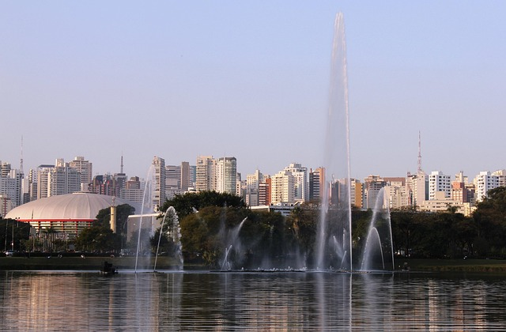
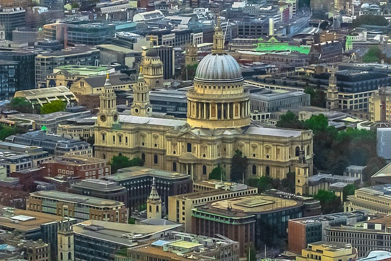
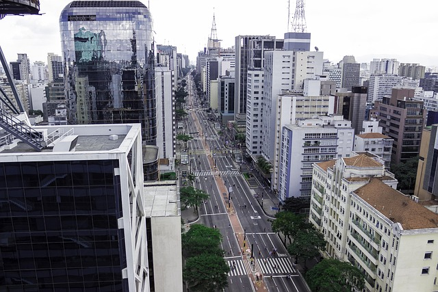

São Paulo é a maior cidade do Brasil e um dos principais centros econômicos da América Latina. A cidade é conhecida por sua grande população, intensa urbanização e trânsito movimentado. Também se destaca pela diversidade cultural, resultado da forte presença de imigrantes de várias partes do mundo.
Na cidade de São Paulo existem vários pontos turísticos e espaços públicos muito visitados, que representam a cultura e o lazer da cidade.
Esses são alguns dos pontos turísticos mais famosos e visitados de São Paulo, sendo locais bastante conhecidos tanto por moradores quanto por turistas:
É um dos parques urbanos mais famosos do Brasil. Ele é muito utilizado para caminhadas, esportes, passeios e eventos culturais. O parque também possui museus, auditórios, lagos e áreas verdes, sendo um dos principais locais de lazer para moradores e turistas.

Conhecido como Mercadão, é um dos pontos turísticos mais tradicionais da cidade. Ele é famoso pela grande variedade de frutas, temperos e alimentos. No local, muitos visitantes procuram experimentar pratos conhecidos, como o famoso sanduíche de mortadela e o pastel de bacalhau.

A Avenida Paulista é uma das principais vias da cidade de São Paulo e um dos maiores centros financeiros, culturais e turísticos do Brasil. Inaugurada em 1891, inicialmente era uma região residencial de elite, mas ao longo do tempo se transformou em um importante polo econômico, reunindo bancos, empresas e instituições.

Esses são apenas alguns dos pontos turísticos mais famosos e visitados de São Paulo, conhecidos tanto por moradores
quanto por turistas que passam pela cidade. Lugares como esses ajudam a representar a diversidade cultural,
histórica e gastronômica da capital paulista, oferecendo experiências variadas para diferentes perfis de visitantes.
No entanto, eles são apenas uma pequena parte de tudo o que a cidade tem a oferecer, já que São Paulo possui uma
grande quantidade de centros culturais, museus, parques, bairros temáticos e espaços de lazer espalhados por toda a
sua extensão. Essa variedade faz com que a cidade esteja sempre pronta para surpreender, proporcionando novas
descobertas a cada visita.